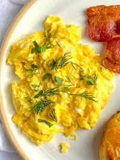

Leafy's Cooking Habits

I really, REALLY love to make eggs. Any type of eggs! It does not matter they are all great! I do have a preference for scrambled eggs or an omelette but I will still eat anything. For the best breakfast sandwich made at home, try cutting thick cut bacon in half before baking in the oven at 400F for about 20 minutes. Don't forget to eyeball for optimal flippage!